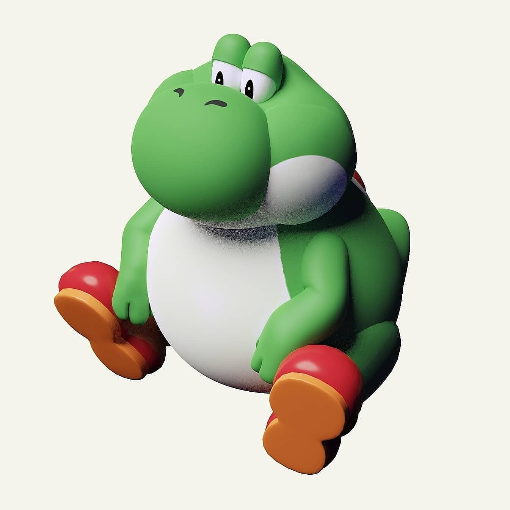

Flexbox: Allign
Allign permite definir los alineamientos dentro de un contenedor con los atributos:
normal, flex-start, flex-end, center y stretch.
Contenedor normal (default)

Contenedor Flex-End
Contenedor Center
Contenedor Stretch
Contenedor Start y Uso de Gap
Home